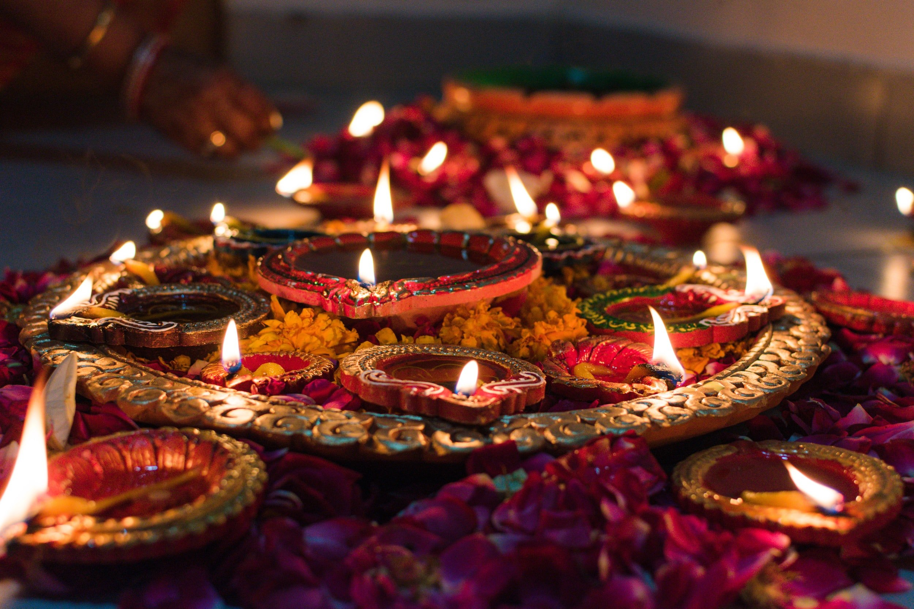
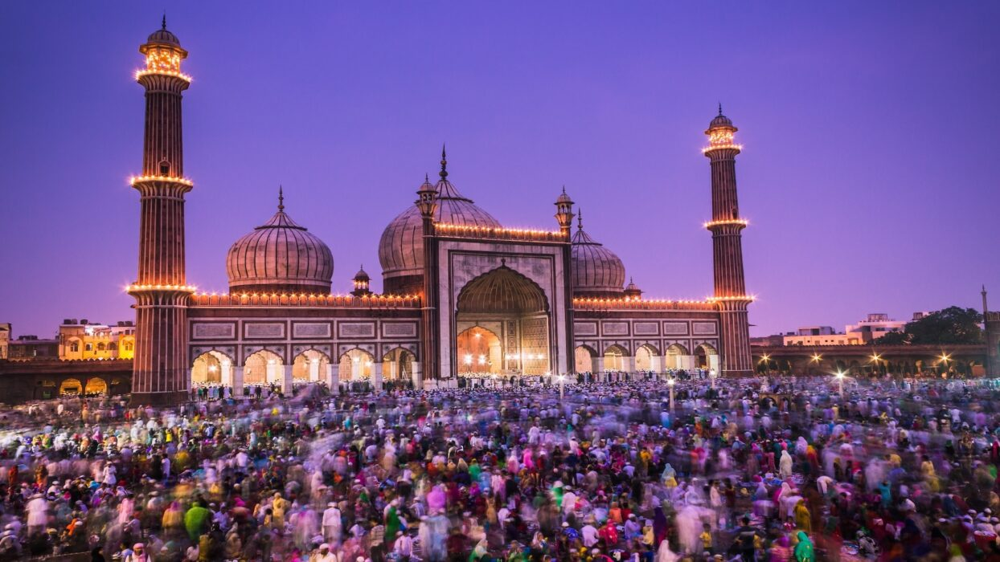
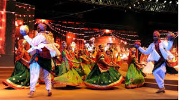

Festivals
Experience the vibrant celebrations of India's festivals, full of color, music, and traditions.
Indian Festivals

Diwali
Diwali, the "Festival of Lights," is a major Hindu celebration symbolizing the triumph of light over darkness. It marks Lord Rama's return to Ayodhya after 14 years of exile. Celebrated over 5 days with diyas (oil lamps), fireworks, and rangoli designs. Families worship Goddess Lakshmi for prosperity and exchange sweets. Jains observe it as Lord Mahavira's Nirvana day, while Sikhs celebrate Bandi Chhor Divas. Falls between October-November (Kartik month). Eco-friendly celebrations are now promoted to reduce pollution. Celebrated across India and by the global Indian diaspora.

Ganesh Chaturthi
This 10-day festival celebrates Lord Ganesha's birth, the remover of obstacles. Clay idols are installed in homes and public pandals, decorated with flowers and lights. Devotees offer modak (sweet dumplings) and chant hymns. The festival culminates with Ganesh Visarjan (immersion of idols in water). Originated in Maharashtra and popularized by Lokmanya Tilak during India's freedom struggle. Eco-friendly idols are now encouraged. Major celebrations occur in Mumbai, Pune, and Hyderabad, as well as in Nepal and Thailand.

Eid al-Fitr
Marks the end of Ramadan, the Islamic holy month of fasting. Begins with the sighting of the new moon. Celebrated with special prayers (Salat al-Eid), feasting, and charity (Zakat al-Fitr). Muslims wear new clothes, exchange gifts (Eidi), and visit family. Traditional dishes include sheer khurma and biryani. Emphasizes gratitude, forgiveness, and community bonding. Unlike Eid al-Adha which involves sacrifice, Eid al-Fitr focuses on joyous celebrations after spiritual reflection. Observed worldwide with public holidays in Muslim-majority countries.

Holi
The vibrant "Festival of Colors" celebrates spring, love, and joy, inspired by Radha-Krishna's divine love. Begins with Holika Dahan (bonfire) symbolizing good over evil. Next day, people play with colored powders (gulal) and water balloons. Traditional thandai (sometimes with bhang) is shared. Breaks social barriers, bringing people together. Major celebrations in Mathura, Vrindavan, and Jaipur feature Lathmar Holi (women playfully hitting men with sticks). Eco-friendly colors are now promoted to protect the environment.

Navratri
"Nine nights" dedicated to Goddess Durga and her nine forms. Celebrated twice yearly (Chaitra & Sharad), with the latter culminating in Dussehra. In Gujarat, marked by energetic Garba and Dandiya dances. In Bengal, coincides with Durga Puja featuring grand idol processions. Devotees fast and perform rituals. The tenth day (Vijayadashami) celebrates Rama's victory over Ravana (good over evil). In South India, Ayudha Puja (worship of tools/books) and Kolu (doll displays) are observed. Celebrates feminine divinity (Shakti) across India with regional variations.
Christmas
Commemorates Jesus Christ's birth on December 25. Traditions include decorating Christmas trees, exchanging gifts, caroling, and Midnight Mass services. Santa Claus folklore is popular among children. Festive meals include roast turkey, fruitcake, and eggnog. Combines Christian traditions with winter solstice customs (like Yule logs). Celebrated globally as both religious and cultural event. Public holiday in most Christian-majority countries. In India, particularly grand in Goa, Kerala, and hill stations with special markets and midnight celebrations blending local traditions.